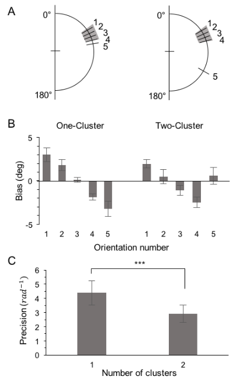

Visual working memory
General direction
Visual working memory is known to have a very limited storage capacity. A big part of my research investigates how we effectively reorganize information into groups to cope with the capacity limits. To cope with this capacity limit, our memory system chunks stimuli. Clustering is one of the chunking strategies that hierarchically stores similar stimuli under the shared representative values (e.g., average). Two studies below investigated how the cluster formed by perceptual similarity can be used as an effective unit of VWM storage in both single and multi-feature domains.
Sub-projects

Similarity-based clustering
We investigated whether clustering based on feature similarity improves the representational quality of visual working memory (VWM). We hypothesized that similar items are organized into clusters, and their recall precision increases with fewer clusters because of reduced memory load. In a series of 6 experiments, participants remembered orientations or colors of several stimuli and estimated the orien- tation (color) of cued item(s). We measured recall bias to identify whether items formed cluster(s) and measured recall precision to determine the effect of clustering on the representational quality of VWM. In Experiments 1 and 2, orientation similarity was manipulated to partition stimuli into 1, 2, or 3 clusters. In Experiment 3, we varied both the number of stimuli and their similarities such that 5 items were summarized into a smaller number of clusters than 3 items. We consistently found that similar items formed a cluster, and that the precision of the individual items increased with fewer clusters regardless of the number of items. We also observed the same clustering effects using color stimuli when participants were to remember items’ colors (Experiment 4). However, a task-irrelevant feature was not potent enough to cluster items and did not increase the precision (Experiment 5). In Experiment 6, we varied item similarity and found that response errors were correlated within the same cluster but not across different clusters. Taken together, these results suggest that clusters formed by similar items can impact the representation of VWM; thus, acting as one of representational units of VWM.

Clustering of multi-feature stimuli
This study investigated the similarity-based clustering mechanism wherein items are separated or grouped based on their feature similarity in visual working memory (VWM). The specific research question was how this clustering mechanism is expanded to multi-feature stimulus domain. Especially, we asked if the clustering occurs at the individual feature level or at the integrated object level when a stimulus array consist of multiple stimuli with various colors and orientations. To test this, we conducted two experiments where participants remember and reconstructed a randomly chosen feature (either color or orientation) from one of the five stimuli. As a key manipulation, we matched the distributions of two feature dimensions such that four feature values are similar while the other one is highly dissimilar from the other four, while controlling the conjunction between the two feature dimensions in two different conditions (congruent condition – CC vs. incongruent condition – IC). In the CC condition, four similar colors were combined with four similar orientations while the rest distinctive color was combined with the distinctive orientation. In the IC condition, three of four similar colors were combined with a similar orientation, but the rest one of the similar four was combined with dissimilar orientation. With this manipulation, we expected to see 2 clusters regardless of conjunction condition if clustering occurs at the feature level. Whereas we expected 2 clusters for the CC condition but 3 clusters for the IC condition if clustering occurs at the object level. Across the two experiments, we consistently observed clear evidence favoring feature-level clustering. However, we found that the swap error rates increased in the incongruent conjunction condition only when two features needed to be encoded in VWM together. These results suggest that in the VWM encoding stage, clustering occurs at the feature level, but the item-level feature binding also affects the clustered feature if the binding information is preserved during the retention interval. Together, our study showed the flexibility of representational formats of information in VWM.